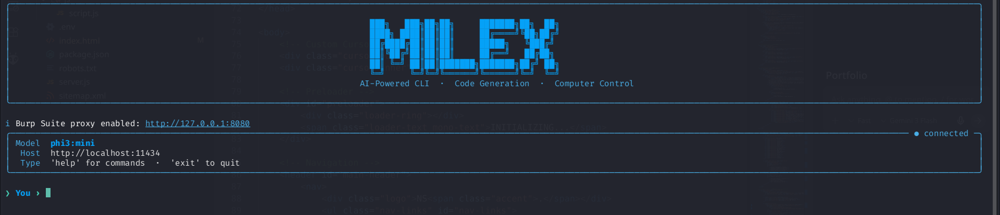

The Mission
MILEX was created to bring the power of AI to the command line without relying on expensive, cloud-based APIs. It allows for private, high-performance task execution directly on the user's machine.
Key Features
- Integration with Ollama for locally running models like Llama 3 or Mistral.
- Automated code generation and shell script execution.
- Local file system context for intelligent file editing and project management.
- Support for RAG (Retrieval-Augmented Generation) on local documentation.
Technical Detail
MILEX uses a custom-built agentic loop in Python, managing model interactions, tool calls, and state to ensure complex multi-step tasks are completed successfully with minimal user input.